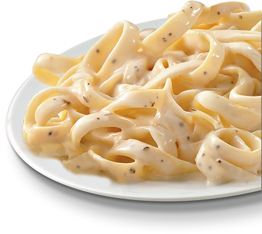

Creamy Fettuccine Alfredo Pasta

Description
We have tried dozens of recipes to get the creamiest fettuccine Alfredo - and here's the winner! Basil and nutmeg add a subtly different feel to this Alfredo.
Macros
Serving: 680 calories; protein 18.8g; carbohydrates 45.2g; fat 48.2g; cholesterol 77.2mg; sodium 673.6mg
Ingredients
- 8 ounces dry fettuccine pasta
- 1 (8 ounce) package cream cheese
- ¾ cup grated Parmesan cheese
- ½ cup margarine
- ½ cup milk
- 1 teaspoon garlic powder
- ¼ teaspoon dried basil
- 1 pinch ground nutmeg
Directions
- Bring a large pot of lightly salted water to a boil. Add pasta and cook for 8 to 10 minutes or until al dente; drain.
- In a medium saucepan, combine cream cheese, Parmesan, margarine, milk, garlic powder and basil and stir over low heat until smooth and creamy, 10 to 15 minutes. Toss sauce with pasta and sprinkle with nutmeg. Serve.
Return to mainpage